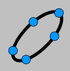

 Documentos - Ignacio Larrosa Cañestro (Grupo XeoDin)
Relación entre el exponente de p en n! y la suma de las cifras de n en base p
Desarrollos en fracción continua de algunos tipos de radicales cuadráticos
Lugar geométrico de los centros de los triángulos equiláteros inscritos en una cónica
Distancias de un punto a los vértices de un triángulo equilátero y el lado
Familia infinita de hexágonos convexos con lados y diagonales enteros
«Árbores mínimas de Steiner con GeoGebra». Artículo en revista GAMMA.
«Árboles mínimos de Steiner con GeoGebra». Versión en castellano.
Ficheros GGB utilizados en el artículo «Árboles mínimos de Steiner con GeoGebra».
Macros GGT utilizadas en el artículo «Árboles mínimos de Steiner con GeoGebra».
Página principal
|
|
|